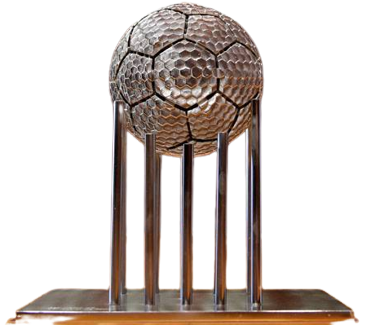
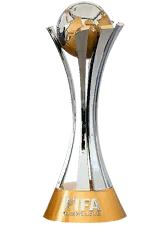
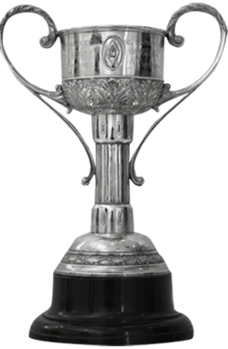
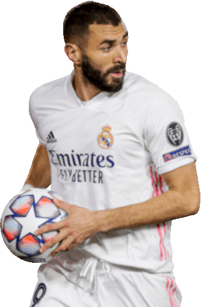

O MAIOR CLUBE DO FUTEBOL MUNDIAL
Junte-se a Nação Blanca
MAIORES CONQUISTAS AO LONGO DOS ANOS
14
Champions League

Melhor Clube Do Século
XX
19
Copa Do Rei

35
Campeonato Espanhol

7
Mundial De Clubes

5
Super Copa Europa
12
Super Taça Da Espanha

18
Troféu Regional
5
Troféu Mancomunado
2
Taça UEFA
2
Taça Latina
1
Taça Da Liga 1984-85
ESTÁDIO NOVO, EMOÇÕES ANTIGAS
"O SANTIAGO BERNABÉU DO SÉCULO XXI: A CONSTRUÇÃO DE UM SONHO"
LENDAS QUE FIZERAM HISTÓRIA!
Alfredo Di Stéfano
 1953–1964
1953–1964
PACO GENTO
1953–1971
Iker Casillas
1998–2015
Cristiano Ronaldo
2009–2018
Sergio Ramos
2005–2021

Karim Benzema
2009–Atualmente
Real Madrid TV Online
Assista aos jogos de futebol e basquetebol, tenha acesso à análise pré-jogo. Aproveite o pós-jogo e viva cada drible, cada chute e cada vitória com a paixão do primeiro tempo.
Tudo isso através do site oficial do Real Madrid TV